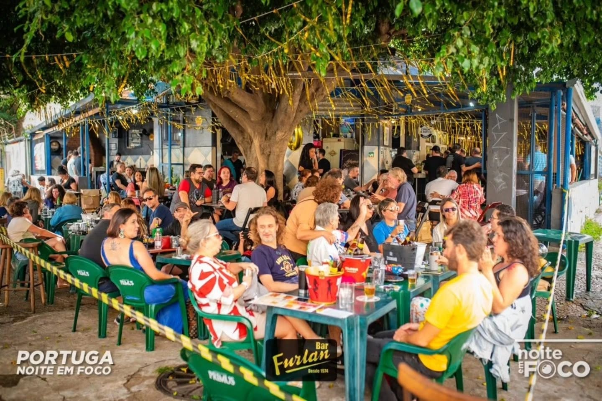
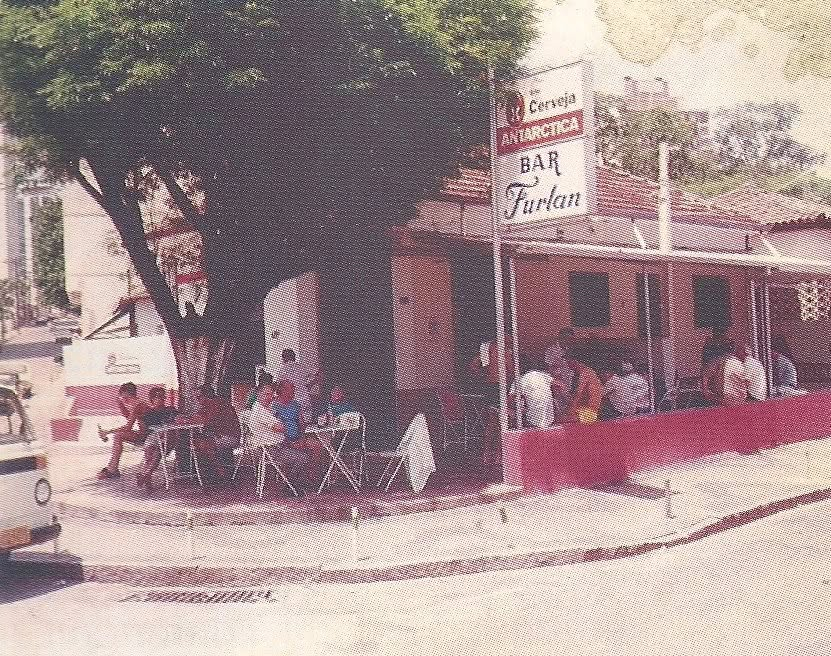
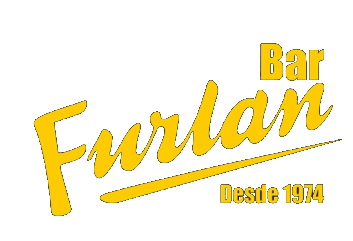

CHOPP GELADO,
PROSA QUENTE.
No coração, o Bar do Furlan serve a alma do boteco brasileiro.

Ver CardápioCola no Bar do Furlan
Tradição e história desde 1974.


No coração, o Bar do Furlan serve a alma do boteco brasileiro.

Ver CardápioTradição e história desde 1974.
